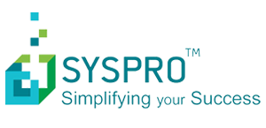

Acumatica
Được thành lập năm 2007, Acumatica là một công ty công nghệ phát triển nhanh, chuyên cung cấp các giải pháp quản trị nguồn lực doanh nghiệp (ERP) dựa trên công nghệ điện toán đám mây (Cloud Computing), khả năng tùy chỉnh cao dành cho các doanh nghiệp vừa và nhỏ, bao gồm các gói quản lý tài chính, phân phối, quản lý quan hệ khách hàng và kế toán dự án. Acumatica Studio, một nền phát triển công nghệ của Công ty, mang lại cho các nhà cung cấp phần mềm độc lập (ISVs) và nhà sản xuất thiết bị gốc (OEMs) một phương tiện phát triển và tích hợp ứng dụng điện toán đám mây một cách nhanh chóng và kinh tế với các công cụ tiêu chuẩn. Sản phẩm Công ty được phân phối thông qua mạng lưới liên minh toàn cầu của những công ty triển khai giải pháp (VARs), ISVs và OEMs.
Ngoài trụ sở chính ở Kirkland, WA, Acumatica còn có văn phòng đại diện tại Washington DC, Moscow và Singapore. Acumatica có văn phòng chi nhánh tại Indonesia và Mexico. Acumatica được bán thông qua các nhà triển khai tại Mỹ, Canada, Anh, châu Phi, Trung Đông, Ấn Độ và các quốc gia khác nhau trong khu vực Đông Nam Á. Trong các nước Bắc Âu và Hà Lan, Acumatica được bán như là một phần của Visma.net; và tại Úc và New Zealand, Acumatica được bán dưới tên thương hiệu của MYOB.
DMSpro tự hào là đối tác vàng của Acumatica.

SYSPRO

Thành lập vào năm 1978, SYSPRO chuyên cung cấp phần mềm quản trị doanh nghiệp trên môi trường mạng nội bộ và trên nền điện toán đám mây cho các khách hàng ở hơn 60 quốc gia. SYSPRO và mạng lưới đơn vị triển khai giải pháp đã giành được sự tin tưởng của các doanh nghiệp ở rất nhiều lĩnh vực công nghiệp với phần mềm hoạch định nguồn lực doanh nghiệp (ERP) và các giải pháp quản trị quy trình doanh nghiệp. Để biết thêm thông tin về SYSPRO và các giải pháp giúp tăng hiệu quả hoạt động trong tất cả các khâu kế toán, sản xuất và phân phối, hãy truy cập www.syspro.com.
Từ tháng 04 năm 2014, SYSPRO đã công bố mối quan hệ hợp tác mới với DMSpro nhằm cung cấp các giải pháp ERP của SYSPRO đến các doanh nghiệp sản xuất quy mô vừa và các nhà phân phối tại Việt Nam. Sự hợp tác chiến lược này giúp tiếp tục mở rộng và củng cố sự hiện diện của SYSPRO tại Việt Nam.
SUNFIX CONSULTING
SUNFIX CONSULTING là nhà cung cấp các phần mềm hàng đầu tại Campuchia ủy quyền của INFOR Channel Partner về các giải pháp, dịch vụ công nghệ tốt nhất trên các lĩnh vực như CRM, tài chính & kế toán. Được thành lập vào tháng Hai năm 2012, SUNFIX CONSULTING cung cấp dịch vụ triển khai, đồng bộ và hỗ trợ hệ thống trên toàn thế giới. Hiểu được tầm quan trọng của hệ thống quản lý tài chính, SUNFIX CONSULTING liên tục giúp các doanh nghiệp sắp xếp hợp lý các quy trình kế toán để nâng cao hiệu quả dữ liệu, tăng tốc độ ra quyết định và thực hiện qui trình quản lý tài chính tiêu chuẩn hàng đầu. Truy cập SUNFIX CONSULTING để biết thêm thông tin về SUNFIX CONSULTING.
Kể từ tháng 6 năm 2015, SUNFIX CONSULTING đã chính thức trở thành đối tác của DMSpro tại thị trường Campuchia. Với thỏa thuận hợp tác này, SUNFIX CONSULTING có thể mở rộng kinh doanh, cung cấp cho các nhà sản xuất của Campuchia các giải pháp hệ thống quản lý phân phối, bán hàng trên nền tảng điện toán đám mây (Cloud DMS) chuyên nghiệp song song với dịch vụ chuyên nghiệp hiện tại của họ.